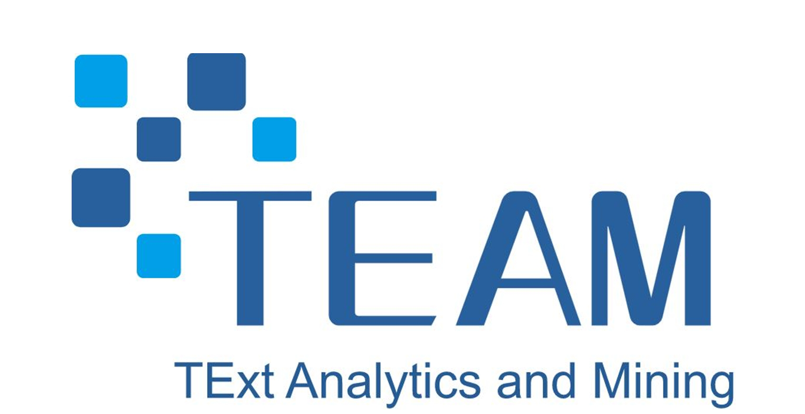

- Looking for highly motivated undergraduate or postgraduate students aiming to perform Bachelor or MSc thesis or to enroll in a program (contact me)
- 欢迎与我联系申请 南京邮电大学 全职研究生 (contact me)



| Mail: | Rui WANG | Office: | 535, 424, Computer Building, Xianlin Campus of Nanjing University of Posts and Telecommunications. |
| School of Computer Science | Tel: | +86-25-5209-0869 | |
| Nanjing University of Posts and Telecommunications | Fax: | +86-25-5209-0869 | |
| No.9, Wenyuan Road, Yadong New District | URL: | http://palm.seu.edu.cn/zhangml/ | |
| Nanjing City zip code: 210023 | Email: | rui_wang@njupt.edu.cn |
I served as reviewer for journals, such as TNNLS, IPM, NCA, ESWA, FCS and Science China Information Sciences.
Last Modified: 2024-07-27